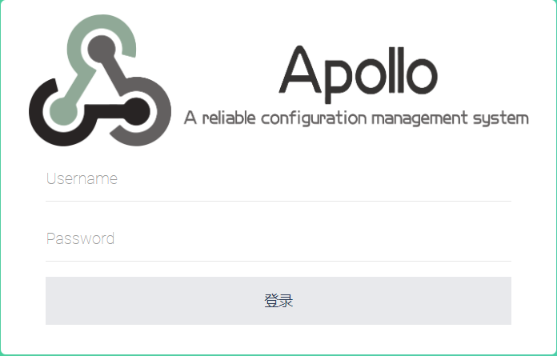
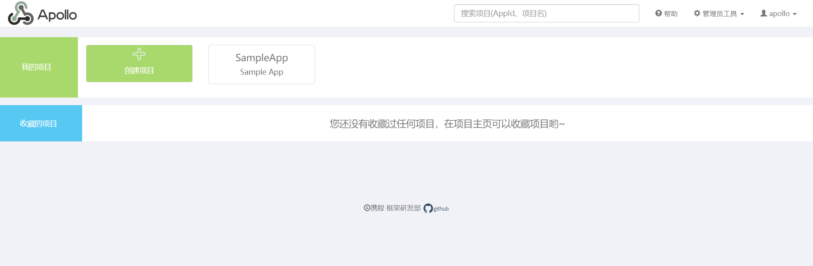

什么是 Apollo
Apollo（阿波罗）是携程框架部门研发的分布式配置中心，能够集中化管理应用不同环境、不同集群的配置，配置修改后能够实时推送到应用端，并且具备规范的权限、流程治理等特性，适用于微服务配置管理场景
服务端基于Spring Boot和Spring Cloud开发，打包后可以直接运行，不需要额外安装Tomcat等应用容器。
Java客户端不依赖任何框架，能够运行于所有Java运行时环境，同时对Spring/Spring Boot环境也有较好的支持。
GitHub：https://github.com/ctripcorp/apollo
Why
背景
随着程序功能的日益复杂，程序的配置日益增多：各种功能的开关、参数的配置、服务器的地址……
对程序配置的期望值也越来越高：配置修改后实时生效，灰度发布，分环境、分集群管理配置，完善的权限、审核机制……
在这样的大环境下，传统的通过配置文件、数据库等方式已经越来越无法满足开发人员对配置管理的需求。
Apollo配置中心应运而生！
配置的基本概念
Apollo 支持 4 个维度管理 KV 格式的配置：
- application：应用（项目）
- environment：环境（生产、测试、开发）
- cluster：集群（一个项目开启多个示例）
- namespace：命名空间（每个配置文件）
Apollo特性
正是基于配置的特殊性，所以Apollo从设计之初就立志于成为一个有治理能力的配置发布平台，目前提供了以下的特性：
- 统一管理不同环境、不同集群的配置
- Apollo提供了一个统一界面集中式管理不同环境（environment）、不同集群（cluster）、不同命名空间（namespace）的配置。
- 同一份代码部署在不同的集群，可以有不同的配置，比如zookeeper的地址等
- 通过命名空间（namespace）可以很方便地支持多个不同应用共享同一份配置，同时还允许应用对共享的配置进行覆盖
- 配置修改实时生效（热发布）
- 用户在Apollo修改完配置并发布后，客户端能实时（1秒）接收到最新的配置，并通知到应用程序
- 版本发布管理
- 所有的配置发布都有版本概念，从而可以方便地支持配置的回滚
- 灰度发布
- 支持配置的灰度发布，比如点了发布后，只对部分应用实例生效，等观察一段时间没问题后再推给所有应用实例
- 权限管理、发布审核、操作审计
- 应用和配置的管理都有完善的权限管理机制，对配置的管理还分为了编辑和发布两个环节，从而减少人为的错误。
- 所有的操作都有审计日志，可以方便地追踪问题
- 客户端配置信息监控
- 可以在界面上方便地看到配置在被哪些实例使用
- 提供Java和.Net原生客户端
- 提供了Java和.Net的原生客户端，方便应用集成
- 支持Spring Placeholder, Annotation和Spring Boot的ConfigurationProperties，方便应用使用（需要Spring 3.1.1+）
- 同时提供了Http接口，非Java和.Net应用也可以方便地使用
- 提供开放平台API
- Apollo自身提供了比较完善的统一配置管理界面，支持多环境、多数据中心配置管理、权限、流程治理等特性。不过Apollo出于通用性考虑，不会对配置的修改做过多限制，只要符合基本的格式就能保存，不会针对不同的配置值进行针对性的校验，如数据库用户名、密码，Redis服务地址等
- 对于这类应用配置，Apollo支持应用方通过开放平台API在Apollo进行配置的修改和发布，并且具备完善的授权和权限控制
- 部署简单
- 配置中心作为基础服务，可用性要求非常高，这就要求Apollo对外部依赖尽可能地少
- 目前唯一的外部依赖是MySQL，所以部署非常简单，只要安装好Java和MySQL就可以让Apollo跑起来
- Apollo还提供了打包脚本，一键就可以生成所有需要的安装包，并且支持自定义运行时参数
Apollo at a glance
基础模型
如下即是Apollo的基础模型：
- 用户在配置中心对配置进行修改并发布
- 配置中心通知Apollo客户端有配置更新
- Apollo客户端从配置中心拉取最新的配置、更新本地配置并通知到应用

安装
Github
它的docker安装有问题，先不要用。
运行成功效果图
通过 http://ip:8070/signin 访问 Apollo 配置中心
- 登录账号：apollo
- 登录密码：admin


项目使用
项目结构

pom引用
1 | <!-- https://mvnrepository.com/artifact/com.ctrip.framework.apollo/apollo-client --> |
app.properties
1 | # Apollo Settings |
application.properties
1 | =true |
Apollo配置

可配置日志级别动态刷新
https://github.com/ctripcorp/apollo-use-cases/tree/master/spring-cloud-logger